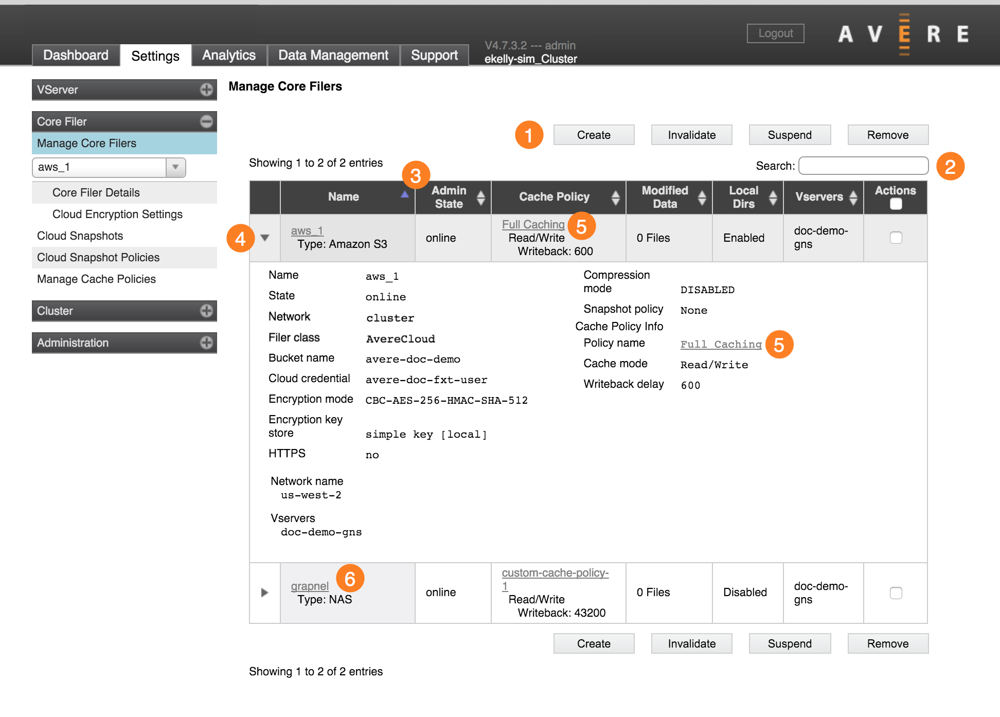

Core Filer > Manage Core Filers
The Manage Core Filers settings page shows a list with all of the configured storage systems (core filers) for the cluster.
Filtering and Sorting the Core Filer List
Click the triangular control at the left of a core filer name (4) to show details for that storage system.
Use the Search field (2) to restrict the list to core filers that match a filter term (for example, a name, type, or setting name). Delete the search text to show all core filers.
The list can be sorted by column values - click the column heading, (3) to sort by that value.
Links to Additional Configuration Pages
Each core filer entry includes hyperlinks on the filer name and on the cache policy.
- Click the name link (6) to go to the Core Filer Details page for that storage system.
- Click the cache policy link (5) to go to the Manage Cache Policies page for that policy.
Core Filer Actions
Four action buttons appear at the top right of the list (1): Create, Invalidate, Suspend, and Remove. These operations are described in more detail below.
Create A Core Filer
Click the Create button to start the process of adding a new core filer.
A wizard utility walks you through adding a back end storage system to the cluster. The process is different depending on whether your storage system is an NFS NAS system or a cloud storage volume.
For more details, requirements, and a step-by-step walkthrough of the wizard for each type of storage, read these documents:
- Prerequisites for Adding a New Core Filer
- Adding a New Core Filer - NAS Core Filer
- Adding a New Core Filer - Cloud Core Filer
For general information about types of storage that can be used as core filers in an Avere cluster, read Working With Core Filers.
Invalidate A Core Filer
The Invalidate option marks all data from the core filer that is cached in the Avere cluster as invalid. Any client-initiated file changes that have not been transmitted to the core filer are discarded, and client read requests will be served from the back-end volume on the next request.
Caution
All cached data is lost if the core filer is invalidated. If your system uses a read-write cache, this means that client writes stored in the cache are lost along with cached read files. It is possible to lose client changes with this option, because files saved by clients might not have been permanently transferred to the back-end core filer storage. Consider the impact carefully and consult Avere Global Services before taking this action.
Invalidating a core filer can interrupt cluster traffic for several minutes.
If you need to invalidate a core filer and delete its entire cache, select the filer by checking the box in its Actions column, then click the Invalidate button.
Suspend A Core Filer
The Suspend feature disables client access to this core filer without permanently removing the filer.
This feature can be used to disable a filer for maintenance, or remove a failed core filer from the system for repair or replacement.
Note
A suspend feature is also available for GNS junctions. Read more on the VServer > Namespace page.
To suspend a core filer, select it in the Actions column, then click the Suspend button. A dialog pops up and asks you to confirm the action.
{kind=link}
Suspending a core filer
If you want to re-enable a suspended core filer, click the triangular control to open the filer details, then click the Unsuspend button at the bottom of the details section. It is unnecessary to select the core filer’s Actions checkbox.
{kind=link}
Activating a suspended core filer